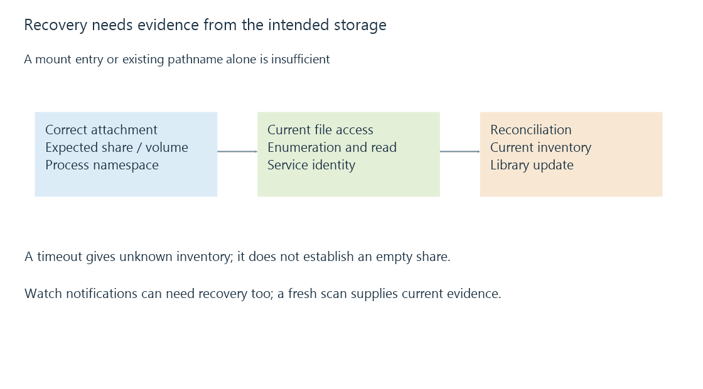

Unavailable network mounts and trustworthy library state
An unavailable mount can be absent, present but unreachable, or replaced by another visible tree, and those states provide different library evidence.
An Emby item can remain visible in the library while its media source is unavailable. The catalog records what the server previously discovered; playback needs the source to be accessible now.
“Unavailable mount” covers several different situations. The distinction matters because an inaccessible tree should not be interpreted as a successful observation that its files have disappeared.
Three states that can look like missing media
| State | What the server can encounter | What it establishes |
|---|---|---|
| Mount absent | No path, or an uncovered local directory | The expected attachment is missing |
| Mount present, server unreachable | A visible mount entry with blocking or failing I/O | Attachment metadata exists; remote access is not completing |
| Another tree exposed at the same path | Valid enumeration of different contents | The pathname exists, but storage identity changed |
A Linux mount point can expose its underlying directory after the intended mount is absent. That directory may be empty or contain files written during an earlier outage. A successful listing there can be misleading if the application intended to scan the NAS tree.
A Windows share or mapped drive can fail through name resolution, connectivity, logon-context changes or credentials. Different failures can produce similar symptoms in the library interface.
Presence is not responsiveness
A mount table records an attachment arrangement. It does not continuously certify that the remote server is answering file operations.
On NFS, client retries and timeout behavior depend on mount policy and implementation. SMB reconnection and handle recovery depend on negotiated features and state. An outage can therefore surface as a long wait, an explicit error or a later reconnect, rather than one uniform “directory not found” response.
Existing open files can also behave differently from new opens. A process holding a handle may have a relationship with the previously opened object that a fresh pathname lookup does not reproduce.
Inventory needs a successful observation of the intended tree
An original scan model starts with two catalog entries:
Known inventory: {Film-A.mkv, Film-B.mkv}
Scan 1: enumeration times out
observed inventory is unknown, not {}
Scan 2: intended share restored; enumeration succeeds
observed inventory is {Film-A.mkv, Film-C.mkv}
The second scan supplies evidence that A remains, C is newly observed and B is absent from that successfully enumerated tree. The first supplies no equivalent missing-file evidence.

Applications have their own retry and removal policies. This model explains what the observations mean; it does not claim that every Emby version performs a particular removal action on every outage.
Recovery has more than one checkpoint
First establish that the correct share or volume is attached at the server's configured path. Then establish that directory operations and a known file read succeed under the service identity. Finally, use the relevant library scan to reconcile current content.
If a mount was restored but a watcher lost its subscription or never received remote change events, recovery of the storage alone may not trigger every pending library update. A fresh inventory observation provides stronger evidence than waiting for an event that may not arrive.
A recording destination deserves the same identity check. If the expected mount was absent, a recording may have been created in an underlying local directory and become covered when the remote tree returned. The recorded file has not necessarily vanished; it may now be hidden behind the mount.
The practical distinction is between a file observed to be absent on the correct readable storage and a file that could not be observed. Keeping those states separate makes playback errors and scan results much easier to interpret.
See Also
- Mount points and the file system behind a path
- SMB file shares: sessions, shares and file operations
- NFS file shares and server-side identity mapping
- Library scanning and catalogue reconciliation